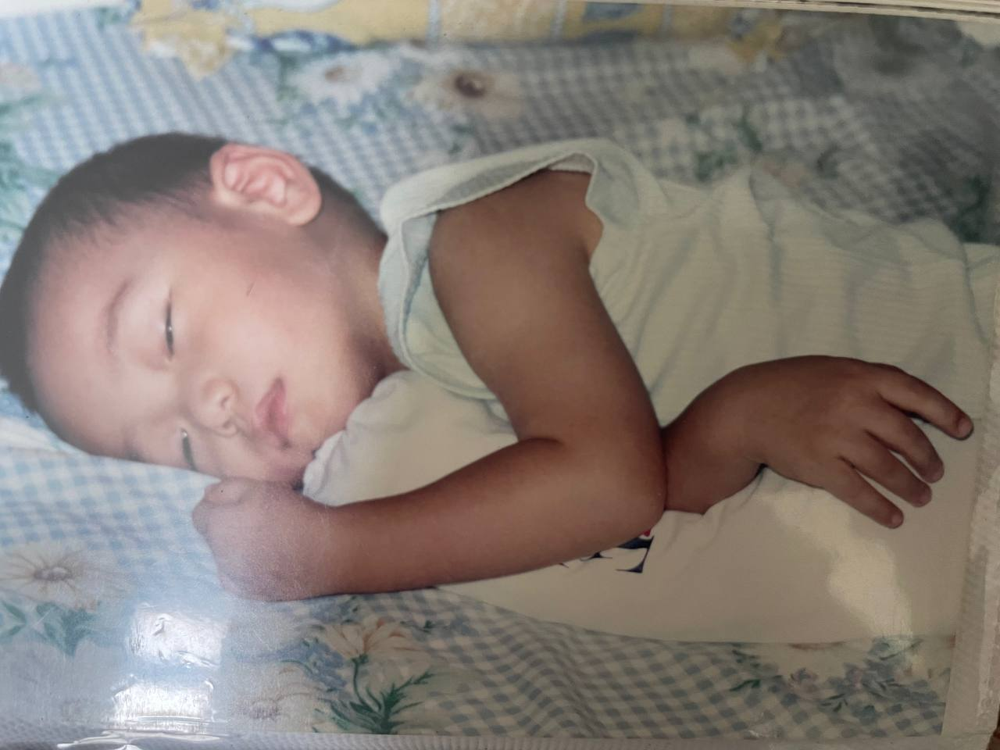

YEAR 2000
"A legend was born"
Born in Singapore to immigrant parents, my childhood was a classic tale of Asian conservatism, filled with swimming, abacus, aikido, and, (of course) piano lessons. My parents were on a mission to mold my brother and me into uber-productive success stories. But while they dreamed of high achievements, I found my own escape in the glow of the dusty family computer.
This digital wonderland became my sanctuary, a place where I could explore endless possibilities far beyond the disciplined structures of my extracurricular activities. I loved surfing the web for information from all over the world, captivated by all things creative: from music to video games.

YEAR 2013
"Same But Different"
In Singapore, most of us march through 10 years of government schooling in matching uniforms, studying the same subjects, and gearing up for the same big exams. Being good at your studies is like having a superpower here, and luckily, I was pretty decent at it.
But the real action for me kicked off outside the classroom. The head of public relations in the student council and the vice chairman of the scout group, I found my true calling. It wasn't just about leading; it was about making school a bit more thrilling for everyone.


YEAR 2017
"I Speak Fluent Adobe."
After surviving a decade of cramming for national exams, I decided it was high time to let my creative flag fly. Turns out, I've had a knack for design since popping out of the womb, so enrolling in Singapore Polytechnic (SP) for a diploma in design and media was an easy-decision.
Between marketing campaign proejcts that could sell ice wholesale to the artic and art classes that had me sketching more apples for hours, I found my tribe in the faculty's student society. I went from society minion to president, pulling off the first-ever inter-faculty camp for freshmen that was less "Fyre Festival" and more "Camp Rock"
But the core memory of my time in SP was being a part of "YASAI," a band of artists from the faculty club with a shared passion music particularly hip-hop. We dove headfirst into Singapore's underground hip-hop scene, dropping our single "Lost" and making waves—or at least some enthusiastic splashes.


YEAR 2020
"The only easy day was yesterday"
In Singapore, National Service is basically a rite of passage for us guys, turning us from boys to, well, slightly older boys with military training. For me, it meant two years of becoming intimately acquainted with every possible way to be uncomfortable underwater. Yep, I was thrown into the deep end, quite literally, as a combat diver in the Naval Diving Unit.
The training was like a crash course in discovering that my mind could bully my body into doing almost anything. Learning perseverance and grit wasn't optional; it was the curriculum, served up with a side of verbal and physical encouragement (read: "abuse") from our loving instructors.
By 2021, I emerged not just as a combat diver but as a platoon sergeant, leading my fellow water warriors in operations. It was brutal, it was tough, but the memories? Absolutely waterproof.


YEAR 2022
"Git Commit, Git Push, Git Good or Get Out"
Post-military service and a brief stint in the design and marketing world, I decided to swap my creative hat for a coding helmet, diving into the realm of software and web development. The allure of cutting-edge tech, with its society-shifting powers, was just so interesting. I wanted in on the action.
Landing at UNSW for university did take a sizable chunk out of my parents' retirement savings—so here I am, determined not to turn their nest egg into an omelet. My mission: become an academic weapon and craft unforgettable memories without bankrupting mom and dad.